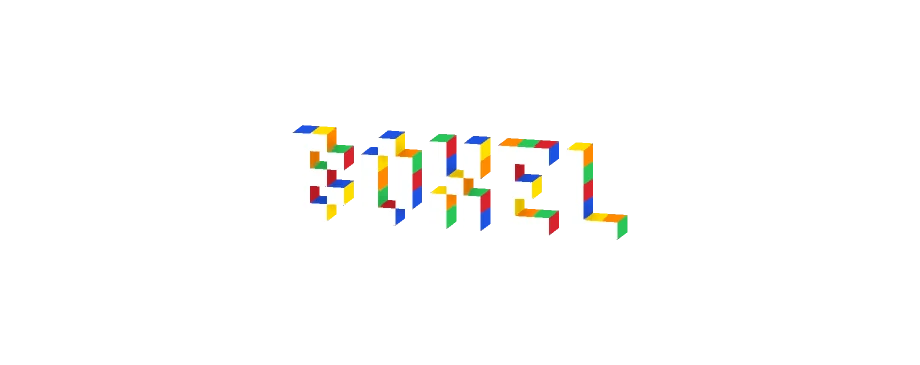
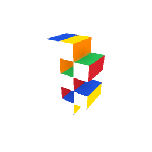
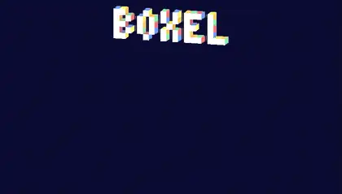
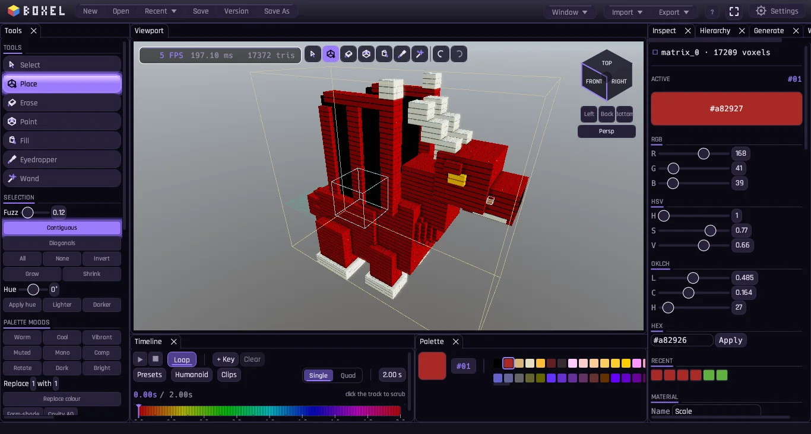

Open source · Rust · MIT / Apache-2.0 · runs on a potatoThe open-source
Blender of blocky
Boxel edits boxels: voxels, upgraded, so every cube face can wear its own material, white up front, candy scramble on the sides. Built for indie devs, pixel artists going 3D, and anyone who bounced off Blender's UV unwrap or hit MagicaVoxel's one-color-per-cube ceiling. Model it, generate it, rig it, light it, ship it into Unity or Godot. Light enough to hold 60fps on a decade-old laptop, so it'll run fine on yours. No cloud, no subscriptions, nothing leaves your machine.
 drag to orbit
drag to orbit
Not a screenshot. That's a live glTF export, rendered right here in your browser, the same file that drops straight into Unity or Godot.


Yeah, the logo's boxels too. Every letter up there is the same six-face cube, just stretched into type. Watch the whole word build itself.
